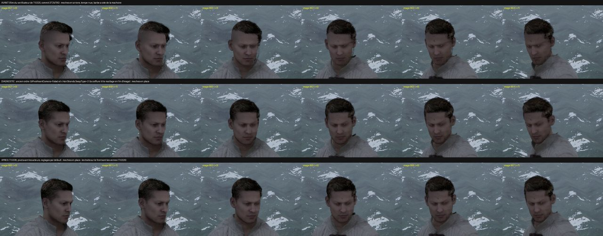
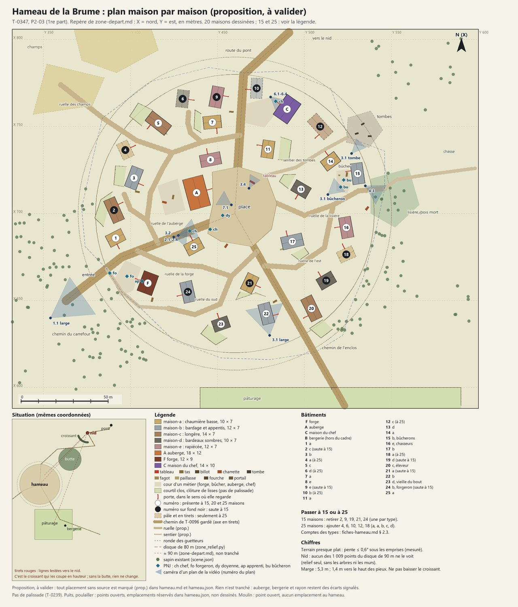
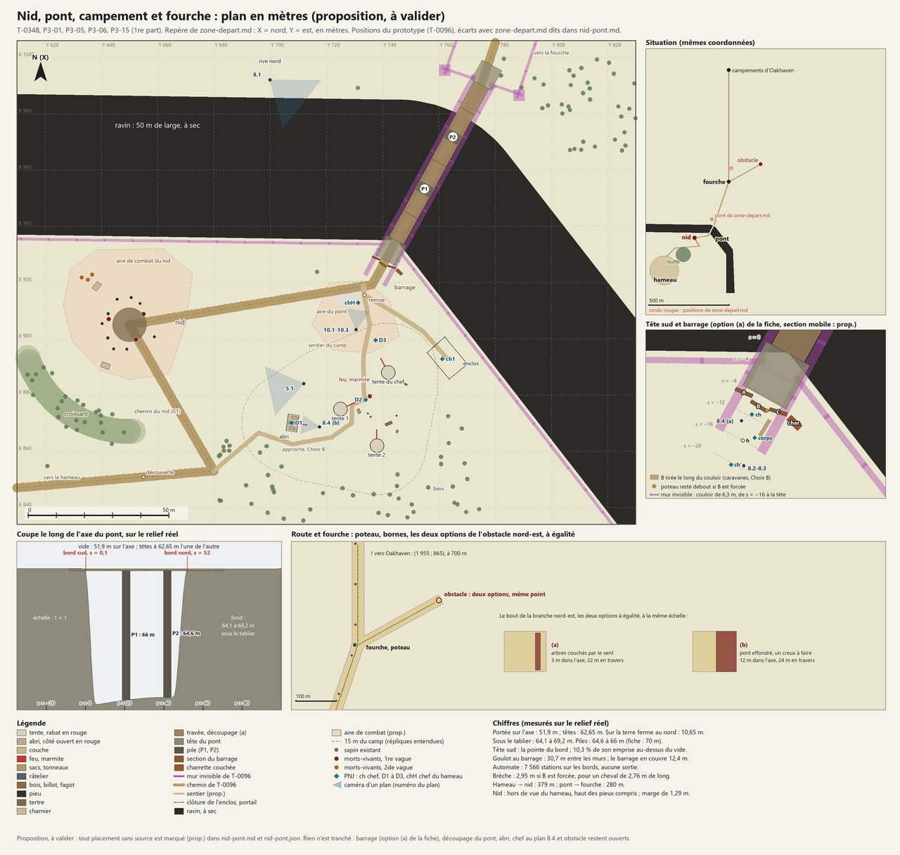
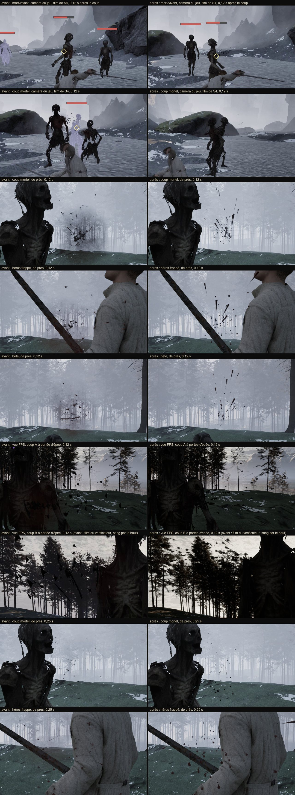
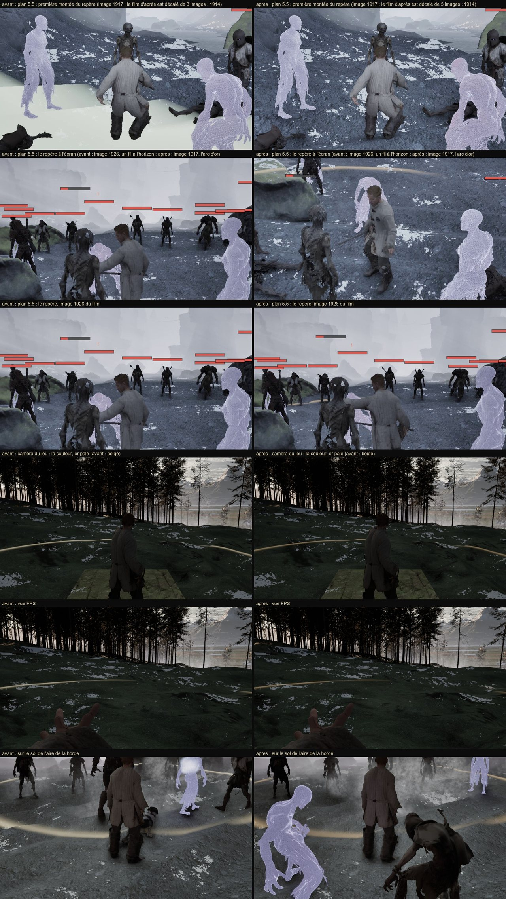
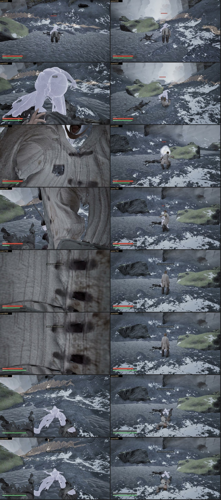

Cheveux pendant le sort : avant, diagnostic, après
ValidéT-0338 · P1-13 · D-323 (6)

Sur le PC : E:\aaa-proto\unreal-v2\mesures\t0338\
Le PC reste en continu, carte graphique et processeur (D-323). Sur la carte : stabiliser la caméra et les cheveux pendant le sort, puis les effets et la scène de l'Ange. Sur le processeur : préparer la démo 2 (voix, fiches).
Mise à jour : 31/10/2026 à 10:25
Les deux files de travail (D-317), en continu (D-323).
Carte libre depuis 18:43 ; T-0320 validé ; T-0338 en cours.
Fumée noire, cendres, dissolution en une demi-seconde, trois paires d'yeux dorés ; sons et voix de l'entité ; vidéo de la scène.
À fairePart après T-0320.
Les répliques du parcours branchées sur leurs moments, avec la vraie voix et le sous-titre calé.
À fairePart après T-0321.
Jauges, verrouillage, visée à la première personne et aides à l'écran au style des maquettes ; le HUD provisoire s'en va.
À faireÉcrit à 19:03 ; part après T-0328.
Niveaux et expérience ; à la fin de la horde, le héros passe au niveau 2 : barre, signal, réplique de l'entité.
À faireÉcrit à 19:03 ; part après T-0331.
Le vérificateur a vu la caméra du jeu trembler pendant la tenue du sort et les cheveux se décoller à l'entrée : trouver la cause et corriger.
ValidéValidé à 00:37 : essai VERT, ROUGE sans compiler quand on remet l'ancien ordre, mesures recoupées, images regardées à pleine taille. Le héros pivote maintenant à la vitesse réglée, plus vif qu'avant : à confirmer en main.
Du sang en gouttes et non en boules, un vrai réseau de veines, un repère de visée posé au sol et non un trait orange par-dessus l'image.
ValidéValidé à 08:41 : sang montrable de près et en mouvement, plus d'image blanche, repère lisible ; parcours VERT, coût ≈ 1 %. À la caméra du jeu, le sang reste discret sur fond sombre.
Quatorze animations attendent, et personne n'a encore essayé de les jouer dans Unreal : un essai court pour lever ce risque.
À fairePart après T-0321.
Dans le film de S4, l'image est remplie 5,8 s par l'intérieur de la veste : trouver la cause et corriger ; régler aussi trois défauts voisins.
En vérificationFait à 10:21 : la caméra part de la capsule d'un cadavre, le joueur le verrait aussi ; corrigé (266 images à moins de 60 cm, plus aucune). Vérificateur lancé à 10:23.
Après T-0339 : T-0321 (l'Ange), T-0355 (animations de Blender dans Unreal), T-0328 (voix de l'entité), T-0331 (affichage), T-0332 (montée de niveau), T-0345 (regard à la manette), P1-21 (sons).
Sans la carte graphique.
Une maison, l'auberge, la forge, générées avec Codex, pour juger l'aspect avant le lot entier.
À faireArrêté à 21:01 au premier appel : la limite de Codex (ChatGPT Plus) est atteinte jusqu'au 04/11/2026 à 8:04. 0 image. À relancer après cette date ; autres options posées au directeur.
Lecteurs français du domaine public (LibriVox), licences vérifiées, extraits transcrits, tableau de propositions et page d'écoute : la génération des voix pourra démarrer dès que la carte sera libre. Rien publié.
ValidéValidé à 00:44 : 89 voix du domaine public, tableau de 25 rôles, page d'écoute sur le PC ; rien n'est tranché, rien n'a été écouté : à vous d'écouter, au questionnaire groupé.
Inventaire et une fiche par modèle à générer, avec son invite d'image, comme pour le hameau : écriture seule, aucune image générée.
ValidéValidé à 00:48 : comptes et calculs refaits par le vérificateur, lore relu. 24 fiches, 27 invites, 21 modèles ; aucune image avant vos réponses sur l'insigne et l'obstacle nord-est.
L'anglais britannique des répliques du pont qui n'en ont pas encore, comme pour le hameau.
ValidéValidé à 00:31 : décompte, recopies et seuils recalculés par un script du vérificateur, aucun américanisme. Les choix d'anglais restent au questionnaire groupé.
Les répliques à enregistrer au pont, les voix de chacun et le temps de carte estimé, sur le modèle de la feuille du hameau : écriture seule.
ValidéValidé à 01:10 : décompte et textes recontrôlés par un script, ressemblances recalculées ; six petits écarts reportés. Aucune voix générée : le ticket de génération viendra après l'écoute ou d'après les scores.
Remarques des vérificateurs sur les fiches du pont et l'anglais, glossaire, prologue, états des démos : rien d'autre n'est réécrit.
ValidéValidé à 01:14 : reports contrôlés, aucune réplique ni aucun ordre ne change.
Position, orientation et type de chaque bâtiment, rues et lieux des PNJ, avec un dessin et des contrôles par script : prépare l'assemblage du hameau, sans la carte.
ValidéValidé à 02:45 : chiffres recalculés par le vérificateur, aucune maison déplacée par la correction. Une proposition, à vous de la valider : auberge, bergerie, nombre de maisons au questionnaire groupé.
Même méthode que pour le hameau : position de chaque élément, contrôles par script, dont le pont contre le relief réel du ravin, et les plans de la vidéo.
ValidéValidé à 04:07 : pont contre relief, fermeture et plans de la vidéo refaits par le vérificateur, aucune décision contredite. Une proposition : ce qui ferme le pont avant le nid, et le barrage, au questionnaire groupé.
Un script relit les dialogues et produit une table unique pour le moteur, la liste des conditions et les écarts entre documents : rien n'est recopié à la main.
ValidéValidé à 05:25 : 305 lignes, textes justes au caractère près, CRLF sans perte. L'import dans Unreal reste à faire au ticket P2-07.
Une coupe écrite pour les 55 sous-titres de plus de 84 signes, sans changer un mot, et l'anglais des 4 répliques restantes.
ValidéValidé à 05:55 : cartons recollés au caractère près par le vérificateur, 15 coupes lues, 4 anglais justes. Les répliques trop rapides restent à vous.
Plan de la zone réaligné par renvois, chiffres des plans, vidéo, états des démos : rien d'autre n'est réécrit.
ValidéValidé à 06:19, après une ligne que j'avais écrite de travers dans le JSON, relevée par le vérificateur et corrigée.
Plan de chaque pièce en mètres, lieu des PNJ, caméras de la vidéo, et une fiche par modèle à générer : écriture seule.
ValidéValidé à 07:41 : calculs refaits par script, lore repris. 15 fiches, 13 modèles, 9 réutilisés ; une question avant le 04/11 : l'invite de l'auberge.
Fiches, invites et plan en mètres : une ferme fortifiée, pas un château ; écriture seule.
ValidéValidé à 08:32 : 11 fiches, 9 modèles, 19 réutilisés ; aucune image avant vos réponses sur l'enceinte et la tour.
Notes à côté des tailles et de la coque, sans changer aucune invite ni aucun choix.
ValidéValidé à 08:40 : notes seulement ; scripts relancés. Hauteur à l'import : au questionnaire groupé.
Les manques du plan sonore que personne n'a encore cherchés, avec les règles de T-0089 : CC0 ou domaine public, sans compte.
En coursLancé à 10:25.
Petites corrections relevées par les vérificateurs dans les plans et les fiches, sans choix du directeur.
En coursLancé à 10:25.
Après le recalcul : la présentation aux investisseurs remise à jour, puis d'autres tickets sans carte.
Les images, modèles 3D et animations du jour (sans vidéo copiée dans la page).
T-0338 · P1-13 · D-323 (6)

Sur le PC : E:\aaa-proto\unreal-v2\mesures\t0338\
T-0347 · P2-03 · D-323

Sur le PC : D:\aaa-game\.equipe\prototype\plan-niveau\
T-0348 · P3-01, P3-05, P3-06, P3-15 · D-323

Sur le PC : D:\aaa-game\.equipe\prototype\plan-niveau\
T-0339 · P1-13 · D-323 (6)

Sur le PC : E:\aaa-proto\unreal-v2\mesures\t0339\c1\
T-0339 · P1-13 · D-182 · D-234

Sur le PC : E:\aaa-proto\unreal-v2\mesures\t0339\c1\
T-0356 · P1-13 · P1-22 · D-323

Sur le PC : E:\aaa-proto\unreal-v2\mesures\t0356\camera\
T-0342 livré, en vérification (fiches du nid, du pont, du campement et de la route). Quota : 14,6 %.
T-0343 lancé sur le processeur : sous-titres anglais du pont.
T-0341 à corriger (page d'écoute, transcriptions déduites, chiffres du forgeron) : reprise sans réseau par un agent neuf.
T-0338 livré : une seule cause pour la caméra qui tremble et les cheveux décollés ; en vérification sur la carte.
T-0343 livré : anglais du pont, en vérification. La relecture du lore de T-0342 est revenue : l'insigne attend la confirmation de son dessin ; cinq autres invites à retoucher.
T-0342 à corriger (vérificateur et gardien du lore) : reprise par un agent neuf.
T-0341 : correction livrée, en vérification.
T-0343 validé (anglais du pont).
T-0344 lancé sur le processeur : feuille des voix du pont.
T-0342 : correction livrée, en vérification.
T-0338 validé (caméra et cheveux pendant le sort). T-0339 lancé sur la carte : sang, veines, repère de visée.
T-0341 validé : voix de départ du hameau (rien n'est tranché, à écouter).
T-0342 validé (fiches du nid, du pont, du campement et de la route).
T-0344 livré, en vérification (feuille des voix du pont). T-0346 lancé (petits reports).
T-0346 livré, en vérification (petits reports).
T-0347 lancé sur le processeur : le plan du hameau, maison par maison.
T-0344 validé (feuille des voix du pont).
T-0346 validé (petits reports).
T-0347 livré : plan du hameau, en vérification. Quota : 17,9 %.
T-0347 à corriger : reprise par un agent neuf.
T-0347 : correction livrée, en vérification.
T-0339 livré, en vérification sur la carte. L'exécutant le dit lui-même : le sang reste à reprendre de près. Planche gardée hors de la page jusqu'à l'avis. Quota : 18,8 %.
T-0347 validé (plan du hameau).
T-0348 lancé sur le processeur : plan du nid, du pont, du campement et de la fourche.
T-0348 livré, en vérification (plan du nid, du pont, du campement et de la fourche).
T-0348 validé (plan du nid, du pont, du campement et de la fourche).
T-0349 lancé sur le processeur : la table des répliques de la démo 2.
T-0339 à corriger : sang de près, image blanche, repère de la horde. Reprise par un agent neuf sur la carte.
T-0349 livré, en vérification (table des répliques de la démo 2).
T-0349 à corriger (5 clés de conditions) : reprise par un agent neuf.
T-0349 : correction livrée, en vérification.
T-0349 validé (table des répliques). T-0350 lancé : les cartons français trop longs.
T-0350 livré, en vérification (cartons français).
T-0350 validé (cartons français). T-0351 lancé (petits reports).
T-0351 livré, en vérification (petits reports).
T-0351 validé (petits reports).
T-0352 lancé sur le processeur : les intérieurs de l'auberge et de la forge.
T-0352 livré, en vérification (intérieurs de l'auberge et de la forge).
T-0339 : correction livrée, en vérification sur la carte.
T-0352 à corriger (vérificateur et gardien du lore) : reprise par un agent neuf.
T-0352 : correction livrée, en vérification.
T-0352 validé (intérieurs). T-0353 lancé (Ferme des Veilleurs et nature).
T-0353 livré, en vérification (Ferme des Veilleurs et nature).
T-0353 : retouches de lore confiées à un agent neuf. Trouvé en chemin : les hauteurs de toit du hameau sont sous-estimées dans les fiches (à reprendre à l'import).
T-0353 validé (Ferme des Veilleurs et nature).
T-0354 lancé (petits reports, avant la relance des images du 04/11).
T-0354 validé (petits reports).
T-0355 écrit : un essai court pour jouer dans Unreal les animations faites dans Blender (risque commun à l'escalade et au reflet).
T-0339 validé. T-0356 lancé sur la carte : la caméra qui passe dans la veste du héros en S4 (vu par le vérificateur).
T-0356 livré, vérificateur lancé sur la carte. T-0357 (sons de la démo 1) et T-0358 (reports) lancés sur le processeur.
Questions en attente du directeur (un seul questionnaire groupé quand tout sera validé, D-295).
22 questions attendent leur réponse. Personne ne les tranche à la place du directeur.
Restes du point 9 de la présentation, que le Chef ne tranche pas (ils engagent l'équipe et votre présentation) : animateurs freelances, nombre de PNJ qui parlent, images, l'équipe.
Pas une question, une demande quand vous voulez : télécharger les animations de la liste (au moins les priorités 1 et 2, ≈ 15 à 20 min) dans E:/aaa-proto/assets/mixamo/, avec les réglages notés. Le Chef lance le reciblage dès qu'elles sont là.
À écouter au casque : E:/aaa-proto/livrables/demo-1/prologue/prologue-en.mp4. Le fond est très baissé sous trois répliques : garder ou remonter ? Et le publier ou non sur le site (la voix de l'entité imite un lecteur réel de LibriVox, ce genre de voix n'a pas été publié jusqu'ici) : (a) le montrer seulement aux investisseurs ; (b) le publier avec la mention « voix générée » ; (c) publier une version sans voix.
La présentation montre le débit probable avec ses fourchettes (démo 1 vers le 13/11/2026). Risque chiffré aux notes de l'orateur : si le processeur prend toujours un tiers du quota hors plan, S7,4, S18,1 et S28,2. Garder le probable, montrer le prudent, ou les deux ? Et la voix du nom (P2-18, ≈ 45 h), à reporter au plan ou non ?
D-321 (3) dit de la montrer, mais elle n'est écrite nulle part dans la page, parce qu'elle porte le nom du compte GitHub : l'écrire telle quelle, ou la donner à part ?
La présentation en ligne cite le plan du 30/10, alors que la page du plan en ligne reste au 17/10 : la page refaite montre le risque chiffré. La publier telle quelle, sans le risque, ou la garder au 17/10 ?
Quand rendre le contrôle au joueur au réveil : à la fin du lever (5,9 s) ou à la fin du plan 18 (1,5 s) ? Où est l'épée pendant le reflet : cachée, à la ceinture (il faut un fourreau) ou main fermée à refaire ?
Palissade, « médiéval fortifié », signe sur les tombes, bête portée au retour de chasse, toits, abri des bêtes, puits, poulailler, moulin : le détail et les options sont dans les fiches du hameau (§ 8, § 9).
La limite de Codex est atteinte jusqu'au 04/11 à 8:04. Attendre, faire ces images avec FLUX.2 klein en local (autre outil que le prologue), ou acheter des crédits (votre décision seul, D-160) ?
P1-06 forcera la vue à la troisième personne sur la paroi, comme le dit le document. Mais avant le reflet, cette vue est bloquée (D-319 (3)) : si le joueur s'accroche à une roche avant le reflet, que faire ?
Noms affichés (The Deserter), surnoms, MAS-02 (un peu trop rapide), BAR-04 (où couper le carton français), et quelques mots : à confirmer avec l'anglais du hameau.
Le héros pivote maintenant à la vitesse réglée (un quart de tour en 0,33 s), plus vif qu'avant, où un défaut l'étirait à 0,63 s. Cela vous convient-il, une fois essayé en main ?
Écouter les voix proposées sur la page locale (E:/aaa-proto/voix/prototype/j2/ecoute.html) ; aucune n'a été écoutée par le Chef ni par les agents. Forgeron, sexes des demandeurs : à confirmer.
Deux choix avant toute image : le dessin de l'insigne, et ce qui ferme la branche nord-est de la route. Puis l'aspect du nid, le pont et le barrage, et le budget de ces modèles.
Répliques communes au hameau et au pont, Choix A ou B, manque d'hommes libres (7 pour 10 places) : à regrouper avec les voix du hameau.
La forme d'ensemble vous convient-elle ? Auberge et bergerie : placées ailleurs que dans le plan de la zone, pour ne pas couper les chemins. Hameau → nid : 379 m au lieu de ≈ 311 m. Nombre de maisons : 15, 20 ou 25.
Qu'est-ce qui ferme le pont avant que le nid soit vidé ? Le barrage ne couvre que 12,4 m d'un goulot de 30,7 m : laisser ainsi ? Au plan 8.4, le camp est dans le dos de la caméra : comment le montrer ?
Dans la scène de la horde, le repère du sort : le cercle de 6 m au regard (choix provisoire), le vrai disque de 20 m qu'on ne voit presque pas, ou rien ? Les veines : de près et en vue FPS seulement, cela vous va-t-il ?
18 répliques passent un peu vite à lire, surtout l'aubergiste : garder, allonger l'affichage ou raccourcir ? Longueur du nom saisi : à limiter ?
Avant le 04/11 : l'invite de l'auberge, telle quelle ou précisée ? Puis comment entrer dans des modèles creux à double peau (cinq options), qui martèle à la forge, où dort l'agente.
Avant toute image : l'enceinte (palissade ou pierre) et la tour (ronde, comme à Oakhaven, ou carrée, comme sur l'image 13), et sa hauteur.
Les toits des formes de T-0096 sont plus hauts que dans les fiches (forge 10 m contre ≈ 6 m). Garder les hauteurs des fiches, celles de T-0096, ou un entre-deux ?
E:/aaa-proto/essai/gibier/laie : la laie (modèle, animations, vidéo) · E:/aaa-proto/essai/villageois/villageois-taches.mp4 : les tâches des villageois · E:/aaa-proto/assets/sons/prologue/ecoute.html : la musique et les sons du prologue · D:/aaa-game/.equipe/prototype/etat-demo-1.md : l'état de la démo 1 et les prochains tickets · D:/aaa-game/.equipe/prototype/plan-sonore-demo-1.md : le plan sonore de la démo 1 · https://chipat-neko.github.io/aaa-game-pages/pages/simulation-hameau/page.html : la simulation du hameau à jour · D:/aaa-game/.equipe/prototype/etat-demo-2.md : l'état de la démo 2 et l'ordre proposé · https://chipat-neko.github.io/aaa-game-pages/pages/presentation/page.html : la présentation pour les investisseurs (à jour au 17/10) · https://chipat-neko.github.io/aaa-game-pages/pages/plan/page.html : le plan de production recalculé · E:/aaa-proto/assets/sons/demo1/ecoute.html : les sons ajoutés à la démo 1 · E:/aaa-proto/voix/prototype/j1/ecoute.html : les 37 voix de l'entité (démo 1) · E:/aaa-proto/livrables/demo-1/video-courte/demo1-video-courte.mp4 : la vidéo courte de la démo 1 (pleine résolution)